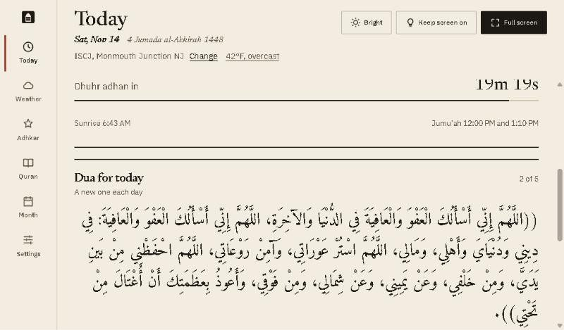
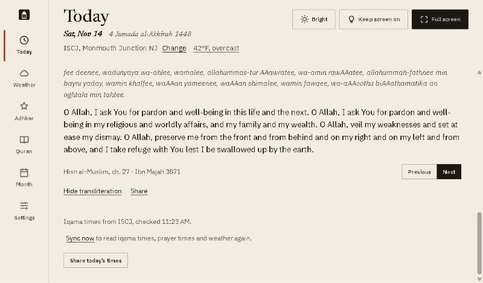

Chapter 3
Reading the Today screen
Today is the screen your tablet shows all day. Everything on it updates by itself, so there is nothing to tap unless you want to.
The top of the screen

- The date, then the Hijri date in italics. Chapter 2 shows how to move the Hijri date a day if your local moon sighting differs.
- Where the times are for, and the weather now. Tap Change to set your place, or tap the weather to open the Weather tab.
- The clock, with seconds. Chapter 6 shows the other clock styles you can choose.
- The five prayers. Each shows the adhan time on top and the iqama time underneath. The next prayer is marked in red and underlined.
The countdown and the dua


- The countdown to the next adhan or iqama, with a line that fills as the time comes closer. In the last 15 minutes the countdown is highlighted and flashes once a second, so you can see it from across the room.
- Sunrise and Jumu’ah. Sunrise is when the time for Fajr ends. Jumu’ah lists the khutbah times. On Fridays they show in the Dhuhr column instead.
- The dua for today, in Arabic, with transliteration and English underneath. The duas change with the time of day.
Under the dua


- Previous and Next move between the duas for this time of day.
- Hide transliteration leaves just the Arabic and English. Share sends the dua to someone, and Listen to the full chapter plays it from Hisn al-Muslim (this needs the internet).
- Sync now reads the iqama times, prayer times and weather again. The app also does this by itself every 15 minutes.
- Share today’s times sends today’s timetable to family or friends, by message or any app you choose.
Prayer names
The app shows the prayers in English. Their Arabic names:
| English | Arabic |
|---|---|
| Fajr | الفجر |
| Sunrise | الشروق |
| Dhuhr | الظهر |
| Asr | العصر |
| Maghrib | المغرب |
| Isha | العشاء |
| Jumu’ah | الجمعة |
Good to know
- When the Maghrib iqama is at the adhan, both lines show the same time.
- The line at the bottom says where the iqama times came from and when they were last checked.
- The first time you open the app, a note asks where you are. Chapter 2 explains the choices.